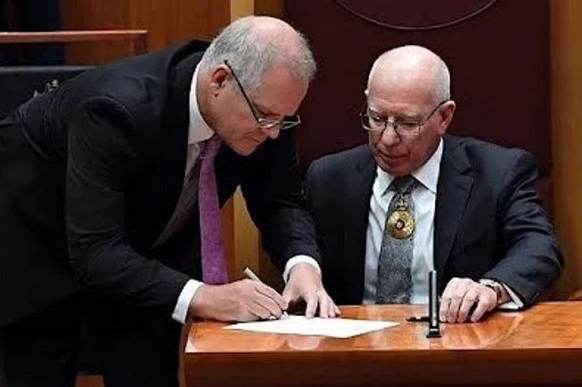

Scott Morrison's "secret powers" are being heralded in much of the media as proof that he was up to no good. The simpler explanation is that on governance issues, he was often just not much good.

"No worries, mate; I'm just nominating us both for Australia's official list of bad judgment calls."
As a journalist and blogger, I must confess: I have had impure thoughts. Forgive me, reader, for I have sinned.
Specifically, as we heave into the second week of multiple-ministry-gate, I have wondered whether this controversy actually matters very much to the nation.
We've seen all sorts of attempts to dress it up as Vitally Important To Our Democracy. One of the best of these, in the sense of making a case for the episode's significance, came (as so often) from Laura Tingle on the 7.30 Report:
https://twitter.com/abc730/status/1559853691447824384
Laura's a fine journalist and analyst, and her judgment has been well honed over almost four decades. So her report intelligently focuses on a tendency that she doesn't like at all: Morrison's actions as an example of creeping presidentialism.
In a smart piece of opinionated reporting, that seems to me exactly the right criticism. We have a system of collective ministerial responsibility, it generally works, and we should retain it.
The Dictator craze
Much of the criticism since then, though, has gone a fair bit further. It has argued in various ways that Scott Morrison was Up To No Good, that what he did was a grab for power.
You can see this in some of the replies to that tweet of Tingle's report, above. "These five secret self-appointments will only be the tip of the iceberg of what Morrison did in secret while PM." "Confirms what I knew from day 1, lying bastard who does not like the Australian people." "He seems to think he could and should be a Dictator answerable to no-one but himself." In various circles it's being frequently described as a "power grab" and as Morrison "taking over responsibility", which seem both slightly true and wholly misleading. A lot of this goes way too far.
Of course, we live in the age of Trump, and to treat Trump's steps as sinister now seems merely prudent rather than paranoid. It is hardly irrational to suspect that an Australian PM might want to act the same way.
Morrison is also, for fairly good reasons, no favorite of many journalists. So by week 2 of the scandal, even respected journalists had worked themselves up to the point where they wrote things like: "Morrison’s rationale he needed to gird against his own ministers acting against the national interest is the most ill-judged & telling remark of any PM in Aus history."
Perhaps "secret powers" is just an easy story for the public to understand. And maybe in a few weeks or months, we will uncover an ugly truth: that Scott Morrison assumed these "secret powers" with the intent to ... well, take stronger control of the government, I guess. (Though even this seems a bit odd, since at the time his appointments occurred, he was considered the LNP government's greatest asset, and was firmly in control.)
But right now, I struggle to see the evidence that this was a power grab. It looks less the grasp of a scheming man than of a drowning one.
Don't get me wrong: what Morrison did also seems to me ill-judged and screwy. He says he needed a backup in case ministers got sick. This is weird. Swearing in a federal minister is not a labour of weeks or months. And whoever suggested the assumption-of-ministries solution as a good answer to anything deserves to have their advisor's licence confiscated and burnt. The whole idea was both daft and unnecessary.
But that said, it's not clear this is going to look very important a few years from now.
Why this episode may not matter much
Here's the case that it may be overblown.
As you'll see, it's not a defence of Scott Morrison, his office, his department or his government. It merely suggests they were sloppy rather than evil. It requires them to skip over some of the finer points of administration and constitutional law — and I certainly think Scott Morrison was relatively uninterested in both.
Specifically, it seems to me likely that this episode happened because a bunch of people, Morrison included, got too agitated by one scenario (a minister disabled by COVID) and didn't think it through. Almost everything that has happened since suggests the "secret powers" were regarded by all concerned as a minor administrative innovation, and then mostly forgotten.
In particular, this interpretation alone seems consistent with Morrison's statement on live radio that there were just two other ministries involved beyond health. A couple of hours later, he had to come back shamefaced to say he had found two more. It seems likely to me that he had genuinely forgotten about these other two – if only because the alternative requires us to believe Morrison wanted to bring more media attention on the episode while making himself look incompetent.
This also explains his willingness to tell two book authors about it, which is how it first slipped out.
Both the radio revision and the disclosure to the book authors seem to me to tell us something about Morrison's thinking.
An exception
The one scenario where the secret powers might be used unnoticed is a decision at once both:
a) too minor for media to focus on for very long, and
b) overseen by ministers not very interested in their prime minister's power to ride right over them.
That did indeed happen once, over an oil lease controlled by Resources Minister Keith Pitt. It was bad process, and went unnoticed by just about everyone, including Pitt's party leader, Barnaby Joyce. (Barnaby has never taken much interest in the finer points of constitutional law and administration.)
That situation was not, however, likely to happen very often. And as Barnaby pointed out on Insiders, not much rode on the issue anyway. The political reality was that with or without the ministerial appointment, the prime minister could override his minister in Cabinet. If the minister still insisted on exercising power the way he wanted to, the prime minister could sack him: ministers serve at the PM's discretion. As far as I know, this isn't some new development; it's the way Australia's system of government has always operated.
The more common scenario
But in most cases, the assumption of secret powers was not going to slip past colleagues or the media. And this seems to me a problem for anyone painting the assumption of secret powers as a Machiavellian manoeuvre. Morrison couldn't use his extra powers to go behind the nation's back. Because those powers would be secret only so long as he did not seek to exercise them on a significant issue. Once he did exercise them there, they would quickly become obvious to all his cabinet colleagues.
And at that point, the secret powers would not act to strengthen his position but to weaken it. As this episode has made clear, several of Morrison's senior colleagues took it as insult not to have been notified. An attempt to exercise the powers on a more significant issue would have likely destabilised his leadership, not strengthened it.
And for what? While Morrison was in secure command of Cabinet, he could get what he wanted most of the time anyway. Indeed, he could have got that in the Keith Pitt case. Why he chose to use his own ministerial power there seems unclear. If Morrison was seeking to keep his extra powers secret, this seems a chancy way to behave: he would have risked exposing these powers for the sake of a fairly minor result.
All in all, it seems more likely that he really did never intend to exercise the powers given to him except in emergency. It seems to me likely that the Pitt case was an exercise in sloppiness, rather than a sinister step towards dictatorship.
The case against this story
There are a number of things that point away from the case laid out above. The most obvious may be that the government revisited the "secret powers" solution several times, adding new ministries well into 2021. The Keith Pitt case underlines the fact that someone in Morrison's orbit remembered the appointment as resources minister well enough to exercise the minister's powers in 2021. There are other elements that seem to create problems with the story I've just told, too.
My problem is that there seem to be even bigger inconsistencies in all the other stories being told.
The Governor-General's role
Then there's what I initially described (in the original published version of this post) as a "bizarre" fact: Morrison's assumption of the ministries was never gazetted or in any way publicised by the Governor-General's officials. There was also what I initially called the "equally odd" statement by the Governor-General that he expected Morrison would publicise the appointments, even after he had shown he wouldn't.
In retrospect, I think I was wrong about both of these points. I've been persuaded by University of Sydney constitutional law expert Professor Anne Twomey, writing in the comments section below in response to that original version of this post. She argues pretty persuasively that these facts, like so many others in this episode, are best explained by the routines of administration.
It's well worth highlighting a couple of Twomey's observations in the article itself:
- Not gazetting the appointment of ministers to administer another department is normal practice, as best she can tell – and she alone appears to have done the legwork. Her response appears to remove concerns about the lack of gazetting.
- The Governor-General couldn't figure out whether Morrison had communicated the appointments just by noting the absence of media coverage. Given what was happening elsewhere, he might reasonably have concluded the media didn't give a toss.
(I remain of the view that this episode will likely mark the end of our run of military governors-general; most of the next few will likely have legal backgrounds again.)
Conclusion
There's a danger in treating every decision of governments as the result of deep thought. Sometimes they are. In emergencies, it's more likely that they're made as gut decisions, based on incomplete information and insufficient gaming-out of future scenarios.
It seems to me that in such circumstances, post-mortems should look for signs of a screw-up as well as signs of a conspiracy. And this episode shrieks "screw-up".
Sinister steps towards dictatorship are, of course, a much more vivid possibility than they used to be, thanks to Donald Trump.
That said, I just can't see how this particular episode would have gotten Scott Morrison the benefits that so many people assume it might have done. It seems to me more likely that this was an ill-thought-through and nearly forgotten governance invention that has now, unexpectedly, exploded in his face.
Update 1, 27/8/2022: Waleed Aly argues – I think rightly – that the whole thing can be fixed with simple legislation stating that all future ministerial appointments be published. We even have an existing publication designed for the job: the Government Gazette.
For that matter, this incident is probably enough to (re-?)establish a convention that such appointments be published. As Aly puts it: "Morrison’s paradoxical legacy is that by flouting the conventions of responsible government so blatantly, he has forced everyone in parliament to restate their importance. After all this, no one could try to repeat what Morrison has done." I'm not even sure this was really "blatant flouting", but it is certainly unlikely to be repeated.
Update 2, 12/6/2022: The prediction of a return to legally-trained governors-general has chalked up a win: our next GG, Sam Mostyn, earned an LLB at ANU.
Update 3, 15/1/2025: "Alan" in the comments rightly highlights the solicitor-general's neat summary of why Morrison's actions should not be repeated: "(I)t is impossible for Parliament and the public to hold Ministers accountable for the proper administration of particular departments if the identity of the Ministers who have been appointed to administer those departments is not publicised."
Now comment: Yes, of course I'm an idiot. Everyone's an idiot about a lot of stuff. Use the comments to tell me why I'm an idiot about this specific argument.
I agree, and I think most of the pundits have had a similar view even if they are a bit prone to hyperventilating in the presence of fellow pundits. For me it's just acted as a marker for Peak Weird — like giving a knighthood to Prince Phillip did for an earlier, more innocent time. I liked what one Senior Lib texted to someone I had lunch with last week "How typical to gain so much power and then do nothing with it!".
The fact that the GG seemed caught by surprise at the reaction would lend support to your hypothesis, David Walker. He apparently thought little of it at the time and/or wasn't paying attention to the details of the piles of papers pushed in front of him. You will recall the scene in Yes Minister when Sir Humphrey pushed a sensitive document to the very bottom of the last red box, assuming that Jim Hacker would not notice or would have lost interest by then. It would be interesting to find out whether Morrison slipped the appointment letters in with a bundle of routine stuff, in a neo-Machiavellian attempt to deceive the GG into thinking they were of no importance; or whether he brought them to the attention of the GG and then both decided that they were routine. The second of these explanations would lend support to your hypothesis, but the first might contradict it.
or the G/G was not doing his job. Surely after the first ministerial 'appointment' the G/G knew these 'appointments were not being publicized. It is his office that has responsibility for the Gazette.
The bit about the Governor-General and gazettal is not quite right. After now having trawled the government gazette to see what is routinely done, this is what I found. Appointments as Minister (i.e. where a person is sworn in as Minister for Health, etc) are always gazetted, but if an existing minister is appointed to administer another department, then it is never gazetted. See for example, the new Albanese Government. Initially 5 Ministers were sworn in during an interim period and they covered all portfolios. Richard Marles, for example, was made 'Minister for Employment' but also authorised to 'administer the Department of Education, Skills and Employment, the Department of Defence, the Department of Veterans' Affairs, the Department of Agriculture, Water and the Environment, the Department of Infrastructure, Transport, Regional Development and Communications and the Department of Industry, Science, Energy and Resources'. But if you read the relevant Gazette (C2022G00430, 23 May 2022), it simply says that he has been appointed as 'Minister for Employment'. It does not list his appointment to administer other departments. The same approach was taken re the appointment of Scott Morrison to administer other departments - it was not gazetted because such appointments never are gazetted. This is not to say they shouldn't be gazetted. I think all of them should be. But we can't blame the Governor-General for not having checked that they were gazetted, because they never had been in the past, and were still not gazetted when done by the Albanese Government either. As for the assumption that the Governor-General 'knew' they were being kept secret - how would he know that? The mere fact that he hadn't read about it in the media might mean that no one noticed or no one cared. There was plenty of other pandemic material to occupy the press. We can look at this in hindsight to see that it was odd and secretive. But at the time, in the middle of a pandemic, can anyone seriously expect the Governor-General to be checking the media to see that each piece of paperwork he does is made public and discussed? I think this is unreasonable. To give you one last example, Richard Marles acted as acting Prime Minister while the PM was overseas and on leave in June and August this year. As far as I can find, there was no gazettal of the source of his power to do so. Either he was authorised to administer the Department of the Prime Minister and Cabinet, but this was never gazetted (consistent with the Scott Morrison appointments), or he was authorised to exercise these powers under s 34AAB of the Acts Interpretation Act and it was not gazetted. Either way, there was no publication of it. Should the Governor-General have insisted on publication or been on alert for secrecy or conspiracies? Should have have hauled ministers in to question it? Of course not. But all his current critics seem to think otherwise.
Anne, thank you very much for this. It comprehensively answers questions I've had for several days about the issue of gazetting. I'm persuaded by this that my initial statements about the Governor-General were wrong. I have altered the post accordingly, while trying to retain a clear picture of what it originally said.
Anne Twomey below makes what I think is a pretty persuasive case that the Governor-General would probably not have known the appointments were not being publicised.
Was what Morrison did unconstitutional, or was it just a new idea like the one Whitlam used when he (and Hasluck) had a two-man ministry sworn in while the 1972 election counting was finalised? Morrison did not trust the second-in-line people for ministries, perhaps because that system was corrupted by political bargaining, and he thought they would be incompetent. My guess is that it's a journalistic beat-up, and that power-drunk journalists are beating up a man when he's down. My opinion is that both Morrison and Albanese are utterly unsuited to leading Australia. They are not to blame for their inadequacies, but the system that selected them is.
No expert is suggesting that Morrison acted unconstitutionally. It was a new idea, like the two-man ministry. I'd rate it a 95% probability that the Solicitor-General will find he breached no laws, either.
Anne has both helped us and given us a mystery. Morrison was a Minister. He was NOT acting. IF I was G/G I would be asking who is the man responsible? When I sign off who will be the Minister? Who was responsible for bringing something to executive council? All Ministers when sworn in should be gazetted. I am not fussed about acting ministers as I already know that from the media. All meetings with the G/G should be open and reasons given for the meeting. Lastly and this is probably a private sector v public sector thing but when I sign off on something I follow it up. I find it not just strange but baffling that Anne seems to think it is okay for the G/G to live in a state of ignorance. Of course if you are the G/G and you swear in a 'minister' on obviously specious reasons what do you do. I do find it strange the G/G was never 'curious' about it at all.
The governor-general knew, or should have known, that he was appointing the first ministers in Australian history who would not be responsible to parliament. Parliament cannot hold ministers to account if it does not know they have been appointed.
Maybe - except that is not how it works. The GG has staff - many of whom have decades of experience processing these papers and I know from experience any missed dotting of 'i's' and crossing of 't's' would cause the documents to be rejected. The PM doesn't just lob up to Yarralumla with a handful of documents to be signed. Only after scrutiny by the GG's minders would the documents have been pushed under his nose to sign. The fact that these were a bit unusual would also have been flagged. So I still find this whole thing very weird with none of the scenarios proffered so far ringing quite true. There are some pieces still missing.
The solicitor-general's opinion:
"Neo-Machiavellian"? I'm finding it a challenge to discriminate between an action that's "Neo-Machiavellian" and one that's "Machiavellian".
Thanks Anne, your comments are very valuable. I'd add though, that Richard Marles acting as PM was not a secret. It just wasn't Gazetted. (Please correct me if I'm wrong about that.)